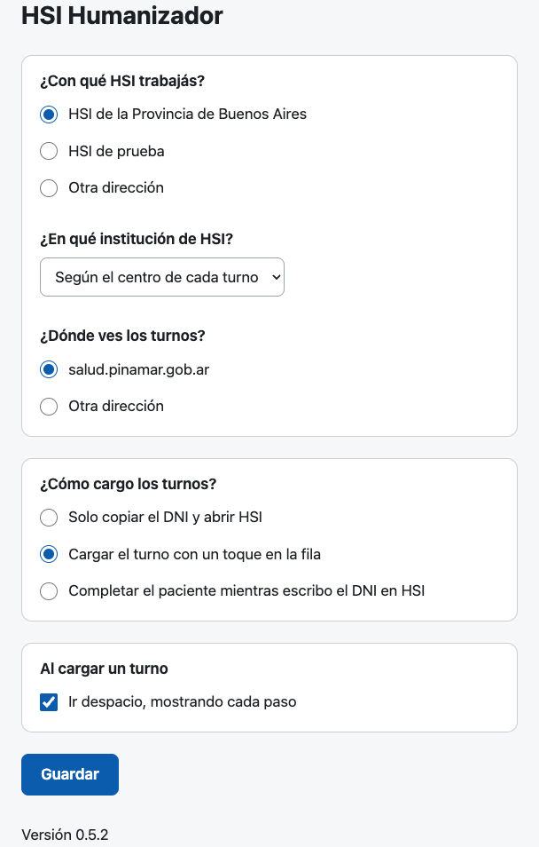
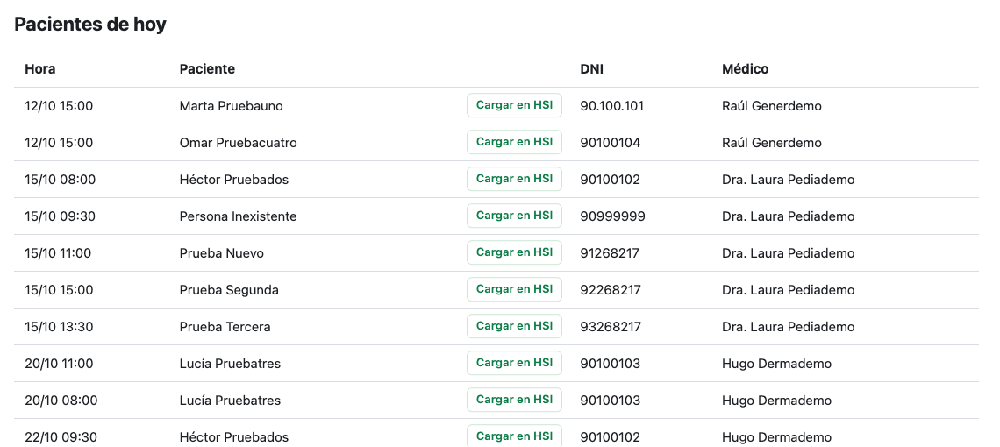
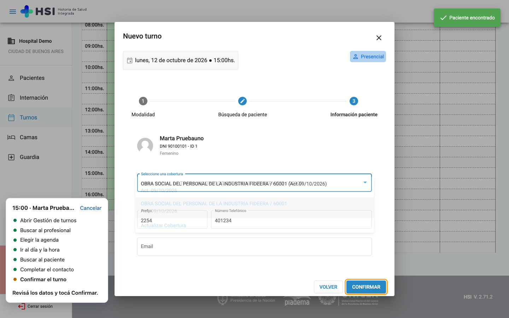
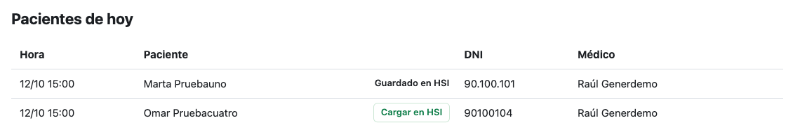
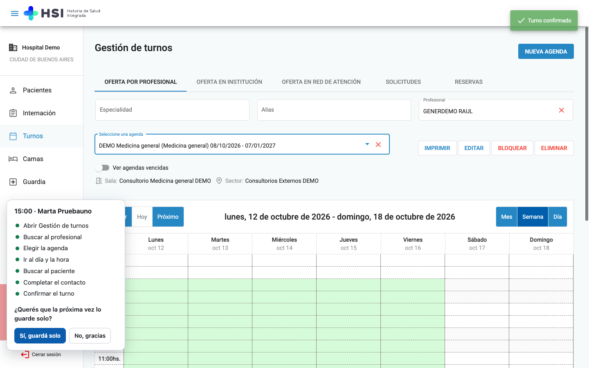

HSI Humanizador
Un toque en «Pacientes de hoy» y el turno se carga en HSI. No hace falta volver a tipear el DNI, el profesional ni el horario.
Instalarla, una sola vez
En Chrome abrí HSI Humanizador en Chrome Web Store y tocá Agregar a Chrome. Si Chrome no te deja, pedíselo a quien administra la computadora.
-
Se abren los ajustes. La HSI de la Provincia, la institución según el centro de cada turno y salud.pinamar.gob.ar ya vienen marcadas: tocá Guardar. Chrome te pide permiso para esas direcciones: aceptalo.

Recargá las pestañas de salud.pinamar.gob.ar y de HSI que ya tenías abiertas.
Sin Chrome Web Store: instalar desde el ZIP
Si la computadora no puede usar la tienda de Chrome, la extensión se instala desde el archivo ZIP.
Descomprimí el ZIP en una carpeta que no vayas a borrar.
En Chrome escribí chrome://extensions y activá Modo de desarrollador.
Tocá Cargar descomprimida y elegí la carpeta que contiene manifest.json. Si Chrome bloquea esta opción, pedile a quien administra la computadora que instale la extensión aprobada.
Fijá la extensión desde el ícono de extensiones y seguí desde el paso 2 de arriba: ajustes, permiso y recarga de las pestañas.
La institución en HSI
Cada centro es una institución distinta en HSI, con su número. Cada turno va solo a la de su centro:
- Hospital de Pinamar: 1086
- CAPS Pinamar: 1068
- CAPS Ostende: 1073
- CAPS Valeria del Mar: 1077
- CAPS DiabetPin: 1084
- Discapacidad: 1082
Para otro centro, la primera vez te pide que elijas su institución en HSI y la recuerda.
Si tu institución no está en la lista, elegí Otra, escribo el número en los ajustes. El número lo encontrás así:
Entrá a HSI con tu usuario.
En «Instituciones», elegí la tuya.
Mirá la barra de direcciones: el número va después de /institucion/, por ejemplo …/institucion/1086/…
Cargar un turno
-
En «Pacientes de hoy», tocá Cargar en HSI en la fila del paciente.

-
Se abre HSI y se completa solo, paso a paso. La primera vez entrá con tu usuario. Si falta tu usuario, tu institución o «Gestión de turnos», el administrador municipal de HSI tiene que habilitarlo.

-
Revisá los datos y tocá Confirmar. La fila queda en Guardado en HSI.

Si el turno cambia después de cargarlo
Si un turno que cargaste en HSI se cancela, el paciente lo cambia de lugar o llega al centro, aparece un recuadro en la esquina con lo que cambió y un botón por cada turno:
- Cancelar en HSI: abre el turno en la agenda de HSI y llega hasta «Cancelar turno». El último paso, Sí, cancelar turno, lo tocás siempre vos.
- Mover en HSI: cancela el lugar viejo, igual que arriba, y carga el turno en el lugar nuevo.
- Marcar presente en HSI: deja el turno en «Confirmado».
Un turno que no cargaste desde esta computadora no se toca. Si HSI no confirma el cambio, el recuadro lo dice y lo hacés a mano.
Cuando te pide ayuda
- No encuentra al profesional o hay más de una agenda: elegilo vos en HSI y sigue sola.
- El horario está ocupado: elegí otro horario en la agenda y sigue sola.
- HSI no tiene al paciente: la extensión abre el alta de HSI con el DNI, el nombre y la fecha de nacimiento ya cargados, y aprieta Buscar sola. Revisá los datos y tocá Guardar: con el paciente guardado, el turno sigue solo hasta Confirmar. Si dejás el alta a medias, la fila vuelve con el motivo. Si a la fila le falta un dato, te lo pregunta ahí mismo y sigue.
- HSI te hace una pregunta: respondela vos. La extensión nunca contesta por vos.
- Querés frenar: tocá Cancelar en el recuadro. No se guarda nada.
Si falta algo
- No aparece el botón Cargar en HSI: fijate en
chrome://extensionsque la extensión esté activada y recargá «Pacientes de hoy». En salud.pinamar.gob.ar, tocá el ícono de la extensión y después Activar en salud.pinamar.gob.ar. Si ves los turnos en otra dirección, marcala en los ajustes, en ¿Dónde ves los turnos? → Otra dirección. - «HSI no abrió Gestión de turnos»: tu usuario de HSI no tiene «Turnos» en esa institución. Lo habilita el administrador municipal de HSI.
- HSI no responde: revisá en los ajustes de la extensión la dirección de HSI, entrá a HSI con tu usuario, recargá la pestaña y tocá de nuevo.
- Dice que HSI está cargando otro turno: terminá o cancelá esa carga y después tocá de nuevo.
Que guarde solo
Después de guardar un turno te pregunta si querés que la próxima vez toque Confirmar por vos. Si decís que sí, carga, guarda y te avisa en la fila. Lo apagás cuando quieras en los ajustes de la extensión.

Cómo querés trabajar
En los ajustes de la extensión elegís entre tres modos:
- Cargar el turno con un toque en la fila: tocás «Cargar en HSI» y se carga todo el turno. Es el modo de siempre.
- Solo copiar el DNI: el botón de la fila copia el DNI y abre HSI. Nada se carga solo.
- Completar mientras escribís el DNI en HSI: abrís vos el horario en HSI, escribís el DNI y, al pasar a otro campo, se completan solos el sexo y el contacto.
Las últimas cargas
Tocá el ícono de la extensión y ves las últimas cargas: quién era, a qué hora y cómo terminó cada una. Si una no se guardó, Abrir en HSI te lleva a HSI con el DNI ya copiado, listo para pegarlo.